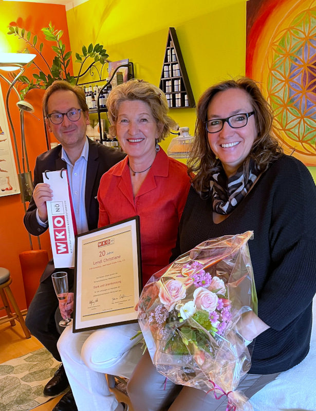
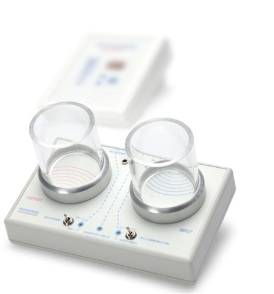

| |
|
KONTAKT
|
|
|
| |
Heilmasseurin Christiane LENDL
|
|
|
0676 / 9050866
|
|
|
|
|
|
|
|
|
nach tel. Vereinbarung
|
| |
| |
|
|
Mitglied der WKO NÖ
|
| |
| |
|
|
| |
|
|
|
|
|
| |
| |
|
Sich etwas Gutes tun in der Oase für Körper und
Seele
|
|
Seinem Körper etwas Gutes gönnen, Ruhe, Entspannung,
sanfte Musik, ... ein gutes Gespräch - diesen Rahmen
für voll umfängliches Wohlbefinden möchte ich Ihnen
hier bieten. Denn das ist die Tür zu einem Leben
voller Energie, Kraft und Freude.
|
|
|
20 Jahre nach der Gründung gratuliert die WKO
mit einer Ehrenurkunde und kommt zum Anstoßen.
900 unterschiedliche Körper hatte ich in
dieser Zeit unter meinen Händen, und eine der
längsten Kundinnen war 715 mal bereits zum Behandeln
bei mir. die Sicht auf das Ganze von Körper und
Seele ist mir nach wie vor ein wichtiges Anliegen.
|

|
|
|
|
|
Klassische Massage
Das vorrangigste Ziel ist, die gesteigerte
Durchblutung der Haut und der Muskulatur zu
erreichen und auf das Nervensystem positiv
einzucwirken. Dadurch wird die Entschlackung und
die verbesserte Ernährung des Gewebes und jeder
einzelnen Zelle und, in Folge, des gesamten
Organismus, erreicht.
|
|
|
Sport-Massage
Sie bietet die Möglichkeit einer passenden
Vorbereitung bzw. Nachbetreuung, im Training
sowie im Leistungssport. Die Intensität und die
Wahl der Methodik wird entsprechend der Sportart
sowie der gewünschten Ziele getroffen.
|
|
|
Akupunkt-Massage
Sie richtet sich nach den Grundlagen der
Chinesischen Medizin. Sie gibt die Möglichkeit
das Gleichgewicht im Körper wieder herzustellen.
Mit Energieverlagerung im Kreislaufsystem der
Meridiane kann auf die Unstimmigkeiten des
Körpers eingegangen werden. So können Yin und
Yang wieder zum Ausgleich kommen.
|
|

|
Bioresonanz - Radionik
Es verbindet uraltes Wissen mit neuester
Technik, in deren Mittelpunkt die Selbstheilung
bzw. die Möglichkeit zur Selbsthilfe steht.
Radionik überträgt Informationen und besteht aus
einer Analyse und der anschließenden Lösung!
Üben Informationen einen Reiz aus, führt dies zu
einer Reaktion, die wir aus der Akupunktur
kennen. Nur dass man diese Reizungen auch mit
sanften elektromagnetischen Induktionen und
Informationen durchführen kann, um
Körperreaktionen auslösen und diese dauerhaft zu
beeinflussen.
Ausleiten, reinigen, Entgiften und
Entschlacken!
Unverträglichkeit von Lebensmittel, Gifte wie
Schwermetalle, Impfstoffe oder Schlackendepots
im Körper können nun mit modernsten Methoden und
mit der Einhandrute gemessen und ausgeleitet
werden. Biochemisch werden Mängel im Körper
festgestellt und ausgeglichen.
Bewusstsein, Krankheitsmuster und
Lösungsprozesse!
Verstärkt wird der bioenergetische
Regulationstechnik auch auf geitige und
seelische Komponenten eingegangen!
|
|
|
Kräuterstempel
Eine sanfte Ölmassage entspannt den Körper und
Seele sehr angenehm. Die Muskeln und die Haut
wird somit vorbereitet! Im Wasserdampf erhitzten
Kräuterstempel werden auf die verschiedenen
Muskelregionen sanft oder mit leichten Druck in
Berührung gebracht. Durch den Dampf öffnen sich
die Poren und somit können die Inhaltstoffe
besser in die Haut und Muskelpartien abgegeben
werden.
Wirkung: Die Wirkung der Kräuterstempel
ist sehr umfangreich. Die allgemeine Aktivierung
der Muskeln, spezielle Tiefenwärme und
Tiefenentspannung. Entgiftung des Gewebes und
der Muskeln. Körper - Geist - Seele können zur
Ruhe und Entspannung kommen.
Herstellung: Von mir selbst, in meiner
Umgebung, liebevollst, und nur erlesene Kräuter
und Blumen gepflückt und getrocknet.
|
|
|
Seelen-schamanismus
Der Seelen-Schamanismus nach Reinhard Stengel
vereint die Bedürfnisse des Körpers mit denen
der Seele indem versteckte Verbindungen
aufgedeckt und geheilt werden.
Fertigkeiten aus dem Seelen-Schamanismus die ich
in meiner Arbeit einsetze:
- Aura reinigen, Blockaden lösen
- Chakren klären
-
Kommunikation mit der seele und mit dem Körper
in Verbindung bringen
- Fuß- und Handstellungen lesen
-
Metamorphose erarbeiten und mit Bergkristallen
harmonisieren
-
Dem inneren Kind, der inneren Frau, dem
inneren Mann im Weg aus alten Verletzungen
begleiten
|
|
|
Massage nach Breuß
Diese Massage ist eine Energiearbeit an der
Wirbelsäule und dringt bis in die tieferen
Schichten des Menschen vor. Es wird eine
ausgesprochen wohltuende und entspannende
Wirkung erreicht!
|
|
|
Einrichten der Wirbelsäule nach Dorn
Diese Technik umfasst zwei große Bereiche: Die
Korrektur von Fehl-stellungen in Gelenken und
Blockierungen der Wirbelsläule. Die Methode ist
eine sanfte, dabei wird nicht ruckartig
mobilisiert, sondern durch Druck auf die Dorn-
oder Querfortsätze der einzelnen Wirbel diese
wieder in ihre ursprüngliche Position gebracht
werden können.
|
|
|
Geführte Energiearbeit
... ist ein intuitives, sensibles Einfühlen in
den Körper!
... ein behutsames und achtsames Hin- und
Durchführen zur/durch Angst und/oder Blockade
..., um das "Innere Kind" kennen zu lernen und
damit mit sich selbst ein liebevollerer Umgang
möglich wird.
|
|
|
Massage mit Aromaölen
"Der Riechsinn ist der Sinn der Phantasie!"
Durch die Anwendung der natürlichen Aromaöle
wird unser Geist und unser größtes Organ, die
Haut, angeregt. Mit Hilfe naturreiner Öle können
sich chronische Verspannungen langsam lösen und
der Körper kann sich wieder wohl fühlen.
|
| |
|
|
| Die Preise: |
|
|
|
|
|
10ner Block |
5er Block |
| 30 min. |
40,- |
400,- + 1x gratis |
185,- |
| 45 min. |
60,- |
600,- + 1x gartis |
280,- |
| 60 min. |
80,- |
800,- + 1x gratis |
375,- |
| |
|
Ich freue mich auf Sie und Ihre telefonische
Terminvereinbarung!
|
| |
|
|
|
|
|
|